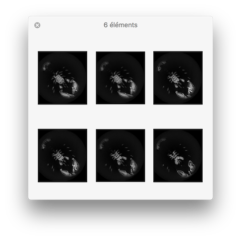

Loading...
Searching...
No Matches
Converters
- Author(s) of this documentation:
- Bertrand Kerautret
Utilities to convert various simple file formats:
- convertVol : a simple generic volume image converters (can process actually pgm3d, vol, longvol, raw (for writing)).
- dicom2vol : converts dicom file into a volumetric file (.vol, .longvol .pgm3d).
- freeman2img : transforms one or several freeman chains into a pgm file by filling their interior areas.
- freeman2sdp : transforms Freeman chain into a Sequence of Discrete Points.
- HDF52vol : converts a 3D 8-bit HDF5 file to vol.
- heightfield2shading : renders a 2D heightfield image into a shading image.
- heightfield2vol : transforms 2D heightfield into a volumetric file.
- img2freeman : extracts FreemanChains from thresholded image.
- imgAddNoise : adds noise (Kanungo's) to a binary 2D object.
- itk2vol : converts itk file into a volumetric file (.vol, .pgm3d).
- longvol2vol : converts a longvol (long int) to a vol file (unsigned char).
- mesh2heightfield : converts a mesh file into a 2D heightmap (from a normal direction N and from a starting point P).
- mesh2vol : converts a mesh file into a 26-separated or 6-separated voxelization in a given resolution grid.
- ofs2off : converts OFS file into OFF mesh format.
- raw2HDF5 : converts a 3D 8-bit raw file to HDF5.
- raw2vol : converts a 8-bit raw file to vol.
- sdp2vol : converts digital set of points into a volumic file.
- slice2vol : converts set of 2D images into volumetric file (pgm3d, vol, longvol).
- vol2obj : converts any volumetric file to an OBJ one.
- vol2raw : converts a vol to a 8-bit raw file.
- vol2sdp : extracts digital points from 3d vol files.
- vol2slice : converts a volumetric file (.vol, .longvol, .pgm3d) into a set of 2D slice images.
- volBoundary2obj : exports the boundary of a volume file to OBJ format.
- vol2heightfield : converts volumetric file into a projected 2D image given from a normal direction N and from a starting point P.
- vox2vol : converts a MagicaVoxel VOX file to a vol file.
- vol2vox : converts a vol file to a MagicaVoxel VOX file.
 |  |  |  |
| heightfield2shading | heightfield2vol | imgAddNoise | mesh2heightfield |
 |  |  |  |
| vol2heightfield | vol2sdp | vol2slice |